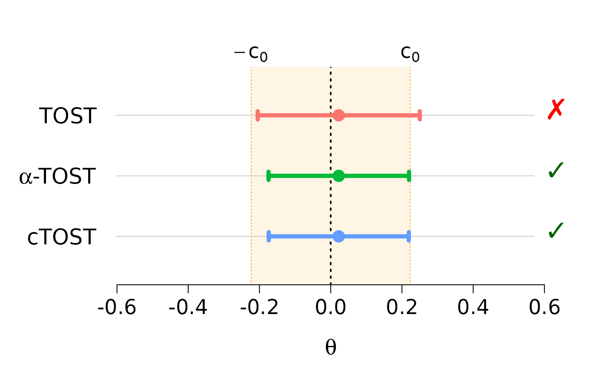
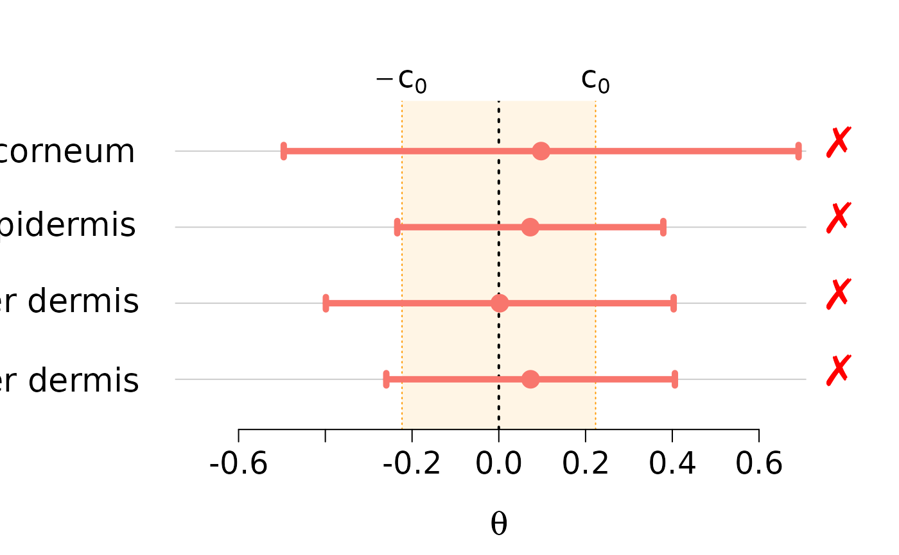
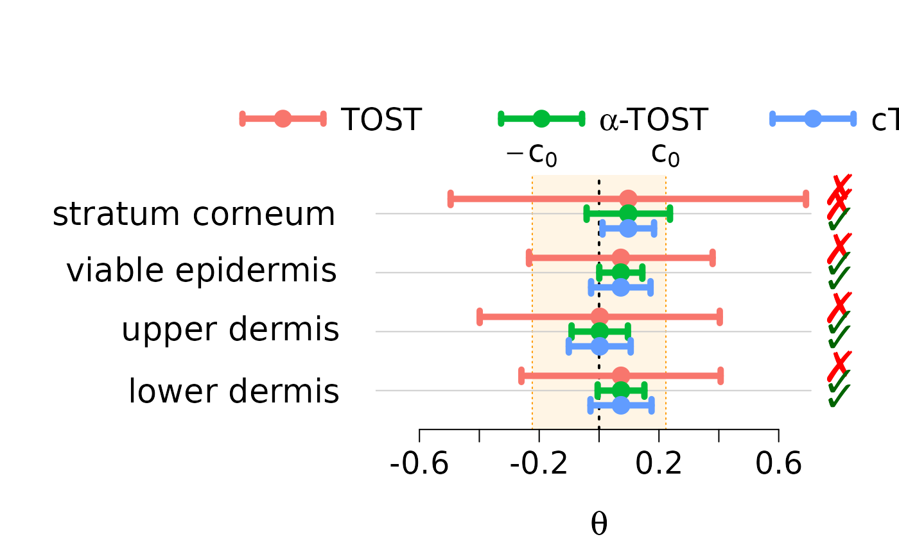
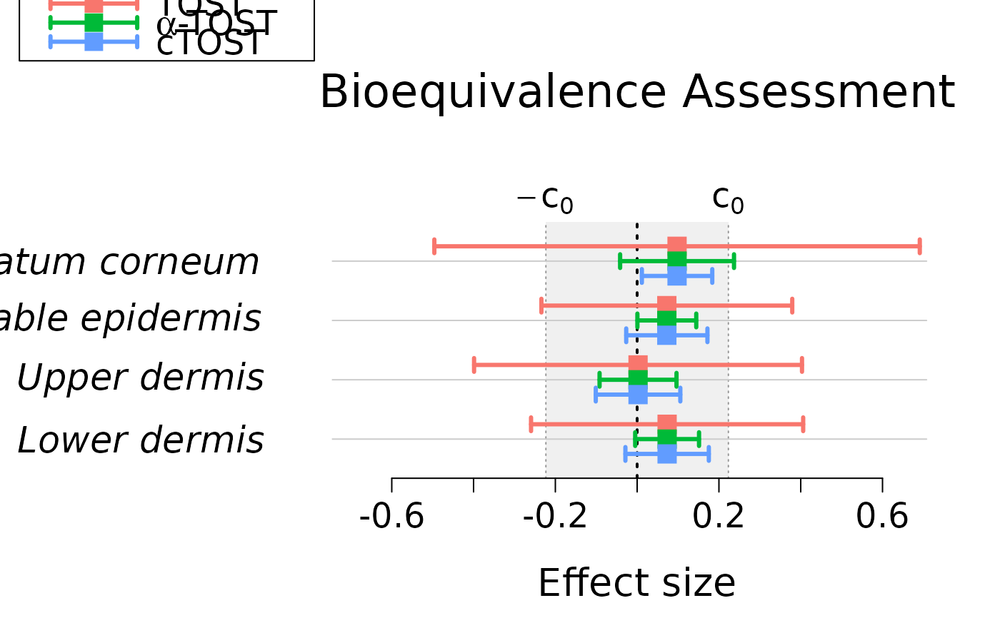

Plot confidence intervals for one or more `tost`, `mtost`, `qtost` or `mqtost` objects
Source:R/plot.R
plot.tost.RdDisplays and compares confidence intervals and rejections regions from one or more equivalence test objects (`tost` or `mtost`). The plot displays point estimates and confidence intervals against a shaded equivalence region, providing a clear visual summary of the test results.
Usage
# S3 method for class 'tost'
plot(..., plot_params = list(), legend_params = list())
# S3 method for class 'mtost'
plot(..., plot_params = list(), legend_params = list())
# S3 method for class 'qtost'
plot(..., plot_params = list(), legend_params = list())
# S3 method for class 'mqtost'
plot(..., plot_params = list(), legend_params = list())Arguments
- ...
One or more `tost`, `mtost`, `qtost` or `mqtost` objects to be plotted, passed as separate arguments.
- plot_params
A named list of parameters to customize the plot's appearance. See the "Customization" section for details on key options.
- legend_params
A named list of parameters to control the legend. The legend is only displayed for multivariate plots (where K > 1). Set to `NULL` to disable. See the "Customization" section for details.
Details
## Customization via Lists The function's appearance is controlled by passing named lists to the `plot_params` and `legend_params` arguments.
### Key `plot_params` options: - `main`, `xlab`: Title and x-axis label for the plot. - `lwd`, `pch`, `cex`: Line width, point character, and base size for CIs. - `col`: A vector of colors for the different methods/objects. - `var_names`: Character vector to override the y-axis labels. - `c0_lab`: A vector of two expressions for the equivalence boundary labels. - `eq_region_fill`: Color for the shaded equivalence region. - `cex.axis`, `cex.main`, etc.: Size controls for specific text elements. - `manage_par`: A logical value. If `TRUE` (the default), the function manages its own graphical parameters (`par`) and resets them upon exiting. Set to `FALSE` when arranging multiple plots in a grid (e.g., with `par(mfrow=...))`. - `add_decision`: A logical value. If `TRUE` (the default), ticks showing the decisions for equivalence assessment are added next to confidence intervals (a check mark or a cross; on PDF/PostScript devices and in non-UTF-8 locales, which cannot render these glyphs, `v` and `x` are used instead).
### Key `legend_params` options: - `x`, `title`, `cex`: Standard `legend()` arguments for position, title, and size. - `equal_spacing`: If `TRUE`, ensures constant spacing between legend items. - `spacing_vec`: A numeric vector to provide exact custom spacing after each item, overriding `equal_spacing`.
Examples
# Univariate assessment
data(skin)
theta_hat = diff(apply(skin,2,mean))
n = nrow(skin)
nu = n-1
sig_hat = var(apply(skin,1,diff))/n
alpha0 = 0.05
c0 = log(1.25)
# Univariate comparison with default inputs
stost = ctost(theta = theta_hat, sigma = sig_hat, nu = nu,
alpha = alpha0, delta = c0, method = "unadjusted")
atost = ctost(theta = theta_hat, sigma = sig_hat, nu = nu,
alpha = alpha0, delta = c0, method = "alpha")
otost = ctost(theta = theta_hat, sigma = sig_hat,
nu = nu, alpha = alpha0, delta = c0, method = "optimal")
plot(stost, atost, otost)

# Multivariate assessment
data(skin_mvt)
n = nrow(skin_mvt)
nu = n-1
theta_hat = apply(skin_mvt, 2, mean)
Sigma_hat = cov(skin_mvt)/n
alpha0 = 0.05
c0 = log(1.25)
# Multivariate assessment of a single method with default inputs
(mvt_stost = ctost(theta = theta_hat, sigma = Sigma_hat, nu = nu,
alpha = alpha0, delta = c0, method = "unadjusted"))
#> ✖ Can't accept (bio)equivalence
#> Equiv. Region: |-------0------|
#> stratum corneum (----------------x----------------)
#> viable epidermis (--------x---------)
#> upper dermis (------------x-----------)
#> lower dermis (---------x----------)
#>
#> CIs:
#> stratum corneum (-0.49593 ; 0.69115)
#> ✖
#> viable epidermis (-0.23411 ; 0.37927)
#> ✖
#> upper dermis (-0.39874 ; 0.40315)
#> ✖
#> lower dermis (-0.25943 ; 0.40601)
#> ✖
#>
#> Method: TOST
#> alpha = 0.05; Equiv. lim. = +/- 0.22314
plot(mvt_stost)

# Multivariate comparison with default inputs
(mvt_atost = ctost(theta = theta_hat, sigma = Sigma_hat, nu = nu,
alpha = alpha0, delta = c0, method = "alpha", B=1e3))
#> ✖ Can't accept (bio)equivalence
#> Equiv. Region: |----------------0---------------|
#> stratum corneum (----------x----------)
#> viable epidermis (-----x------)
#> upper dermis (-------x-------)
#> lower dermis (------x------)
#>
#> CIs:
#> stratum corneum (-0.04164 ; 0.23686)
#> ✖
#> viable epidermis (0.00063 ; 0.14454)
#> ✔
#> upper dermis (-0.09186 ; 0.09627)
#> ✔
#> lower dermis (-0.00477 ; 0.15135)
#> ✔
#>
#> Method: alpha-TOST
#> alpha = 0.05; Equiv. lim. = +/- 0.22314
#> Corrected alpha = 0.34081
(mvt_ctost = ctost(theta = theta_hat, sigma = Sigma_hat, nu = nu,
alpha = alpha0, delta = c0, method = "optimal"))
#> ✔ Accept (bio)equivalence
#> Equiv. Region: |----------------0----------------|
#> stratum corneum (-------x------)
#> viable epidermis (--------x--------)
#> upper dermis (--------x--------)
#> lower dermis (--------x--------)
#>
#> CIs:
#> stratum corneum (0.01153 ; 0.18369)
#> ✔
#> viable epidermis (-0.02672 ; 0.17188)
#> ✔
#> upper dermis (-0.10118 ; 0.10559)
#> ✔
#> lower dermis (-0.02873 ; 0.17531)
#> ✔
#>
#> Method: cTOST
#> alpha = 0.05; Equiv. lim. = +/- 0.22314
plot(mvt_stost, mvt_atost, mvt_ctost)

# Multivariate comparison with custom inputs
plot(
mvt_stost, mvt_atost, mvt_ctost,
plot_params = list(
main = "Bioequivalence Assessment",
xlab = "Effect size",
var_names = c(expression(italic("Stratum corneum")),
expression(italic("Viable epidermis")),
expression(italic("Upper dermis")),
expression(italic("Lower dermis"))),
pch = 15,
lwd = 3,
mar_adj = c(0, 8, 4, 0),
cex.axis=1.5,
cex.main=2,
line.main=4,
line.ylab=2,
eq_region_fill = grDevices::adjustcolor("grey60", alpha.f = 0.15),
eq_region_lines = "grey60",
add_decision = FALSE
),
legend_params = list(
legend = c("TOST", bquote(alpha*"-TOST"), "cTOST"),
x = -1.15,
y = 10,
inset = -0.7,
title = "Method:",
bty = "o",
horiz = FALSE
)
)
